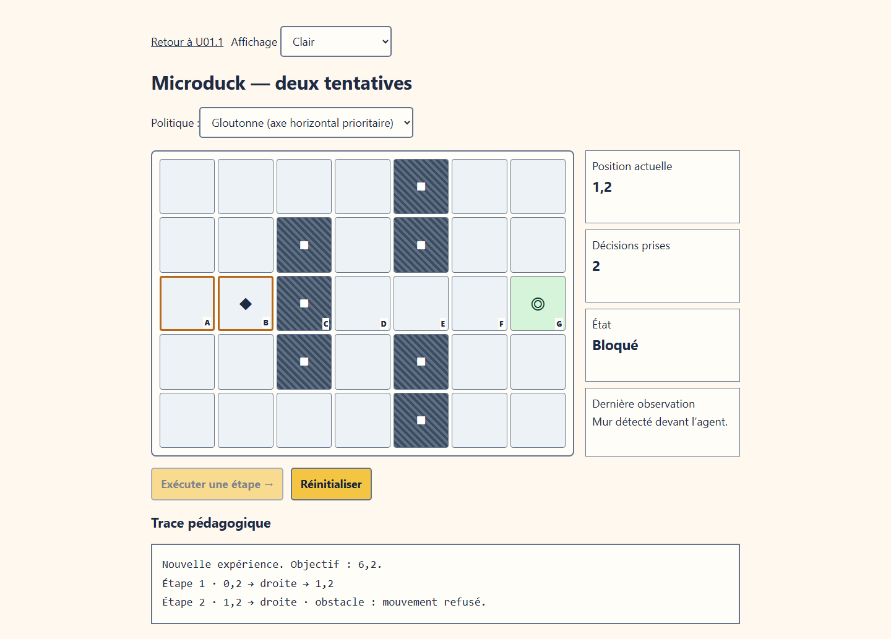
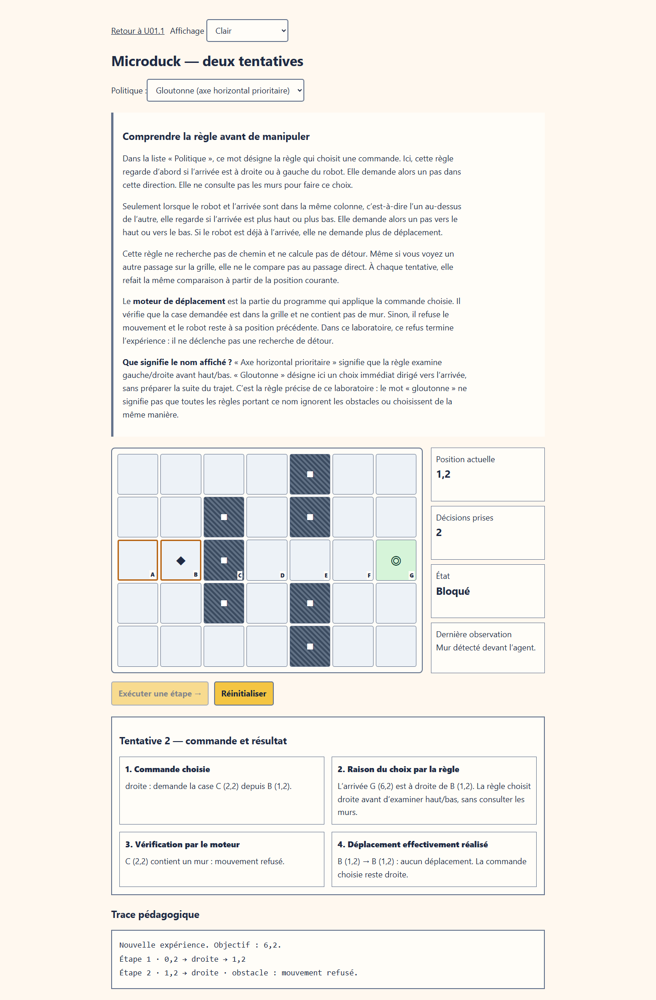
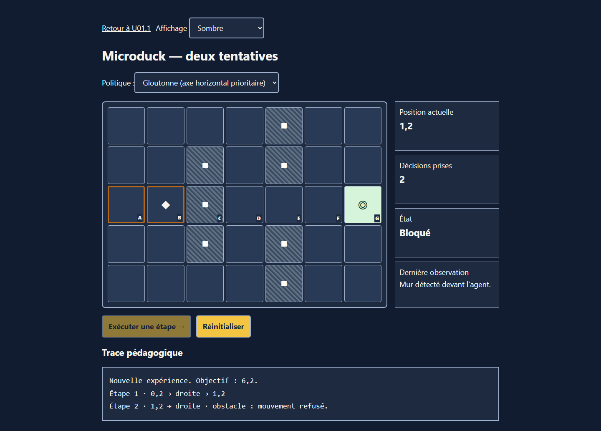
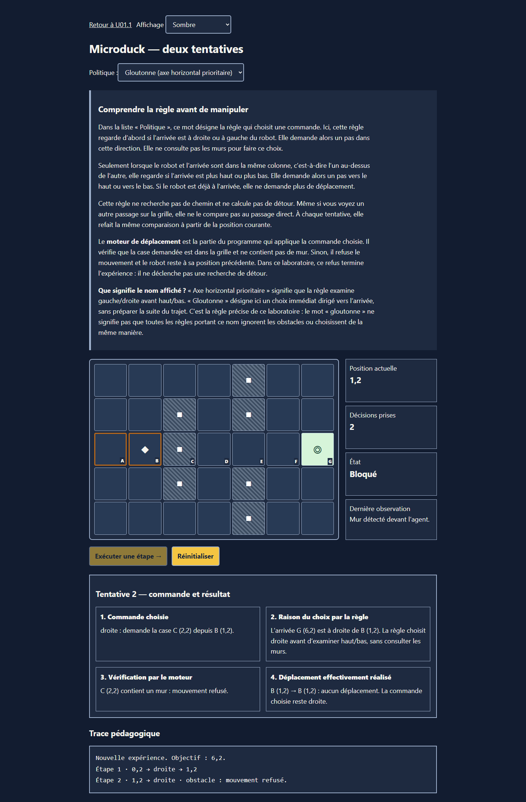
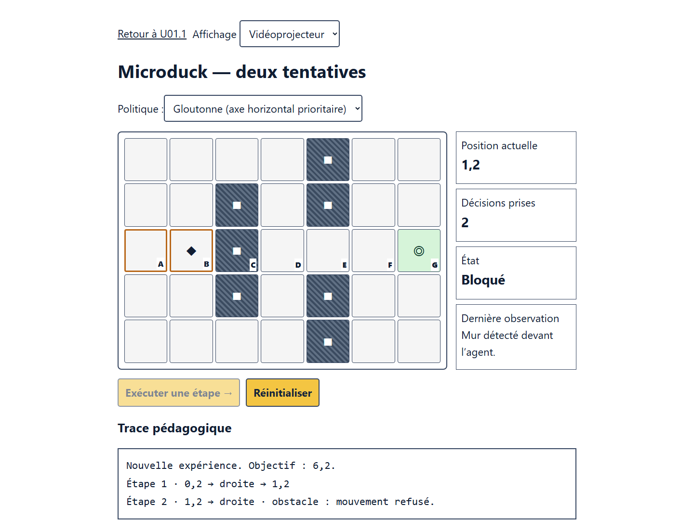
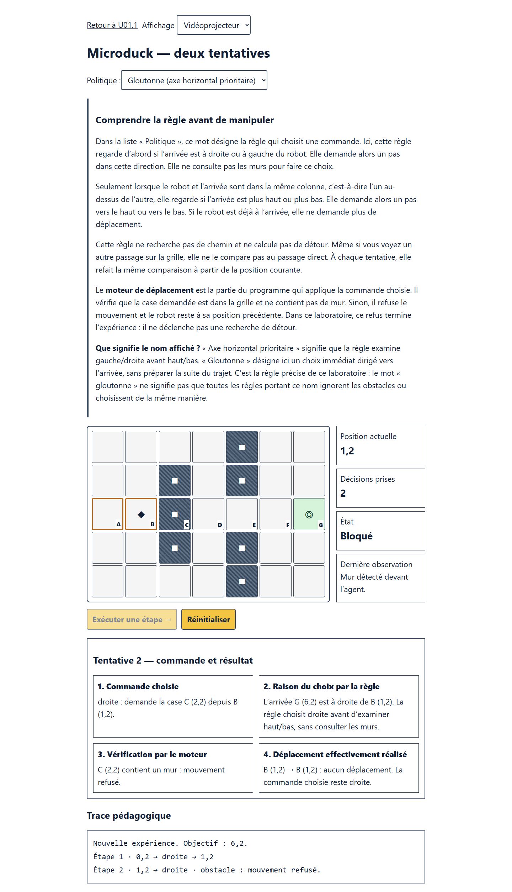

Comparaison du laboratoire après la deuxième tentative, avant et après la correction ciblée. Le moteur est identique. Les captures sont des états techniques contrôlés, pas des essais auprès d’apprenants.






Tentative 1, clair · Tentative 1, sombre · Tentative 1, vidéoprojecteur · Explication avant P1 et manipulation · Cadre intégré sur mobile
33 tests réussis ; compréhension pédagogique à examiner humainement. Aucun changement du moteur, aucune fusion ni aucun déploiement.